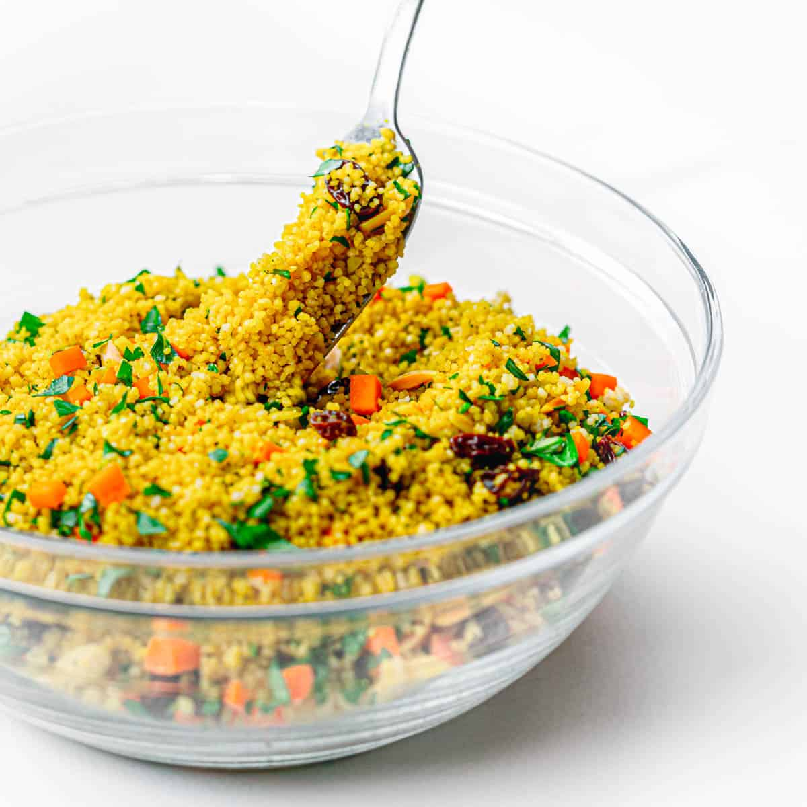

Curry Couscous

Description
This curry couscous recipe is a perfect accompaniment to lamb chops or any grilled seafood. It's light, refreshing, and very easy to make!
Ingredients
- 1 ½ cups couscous
- 3 cups chicken stock
- 1 tablespoon curry powder
- 2 teaspoons salt
- 1 teaspoon ground black pepper
- 2 tablespoons extra-virgin olive oil
- ½ cup raisins
- 1 bunch cilantro, chopped
- ½ cup slivered almonds, toasted
Steps
- Pour couscous into a large bowl; set aside.
- Mix together chicken stock, curry powder, salt, pepper, olive oil, and raisins in a large saucepan and bring to a boil; remove from heat and pour boiling liquid over couscous. Seal the bowl with plastic wrap and let sit for 10 minutes.
- Fluff couscous with a fork. Top with cilantro and almonds.
Also check out other recipes on the Odin Recipes.